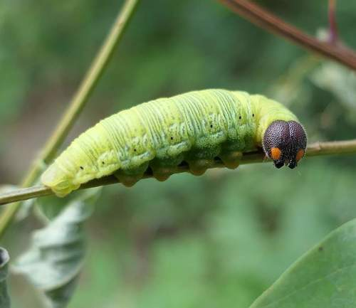

Silver-spotted Skipper
Epargyreus clarus butterfly / moth

Large skipper; caterpillars host on native legumes (milkvetch, vetch).
31 documented plant relationships.
sips nectar at
 Boreal YarrowAchillea borealis
Boreal YarrowAchillea borealis Dendroica cerulea, some rights reserved (CC BY)") Canada AnemoneAnemonastrum canadense
Canada AnemoneAnemonastrum canadense Douglas Goldman, some rights reserved (CC BY-SA), uploaded by Douglas Goldman") Canada GoldenrodSolidago canadensis
Canada GoldenrodSolidago canadensis Douglas Goldman, some rights reserved (CC BY-SA), uploaded by Douglas Goldman") ChokecherryPrunus virginiana
ChokecherryPrunus virginiana Tom Pollard, some rights reserved (CC BY), uploaded by Tom Pollard") Evening PrimroseOenothera biennis
Evening PrimroseOenothera biennis Douglas Goldman, some rights reserved (CC BY-SA), uploaded by Douglas Goldman") Flat-topped GoldenrodEuthamia graminifolia
Flat-topped GoldenrodEuthamia graminifolia Michael J. Papay, some rights reserved (CC BY), uploaded by Michael J. Papay") Flat-topped White AsterDoellingeria umbellata
Flat-topped White AsterDoellingeria umbellata Catherine C. Galley, some rights reserved (CC BY), uploaded by Catherine C. Galley") Fragrant SumacRhus aromatica
Fragrant SumacRhus aromatica Alan Prather, some rights reserved (CC BY), uploaded by Alan Prather") Giant HyssopAgastache foeniculum
Giant HyssopAgastache foeniculum Tom Norton, some rights reserved (CC BY), uploaded by Tom Norton") Highbush CranberryViburnum opulus
Highbush CranberryViburnum opulus Joe-Pye WeedEutrochium maculatum
Joe-Pye WeedEutrochium maculatum aarongunnar, some rights reserved (CC BY), uploaded by aarongunnar") Meadow BlazingstarLiatris ligulistylis
Meadow BlazingstarLiatris ligulistylis Jason Sturner, some rights reserved (CC BY)") Nodding OnionAllium cernuum
Nodding OnionAllium cernuum Carrie Seltzer, some rights reserved (CC BY), uploaded by Carrie Seltzer") Northern HedysarumHedysarum borealePrairie ThistleCirsium flodmaniiPurple ConeflowerEchinacea angustifolia
Northern HedysarumHedysarum borealePrairie ThistleCirsium flodmaniiPurple ConeflowerEchinacea angustifolia Douglas Goldman, some rights reserved (CC BY-SA), uploaded by Douglas Goldman") Self-healPrunella vulgaris
Self-healPrunella vulgaris Douglas Goldman, some rights reserved (CC BY-SA), uploaded by Douglas Goldman") Showy MilkweedAsclepias speciosa
Showy MilkweedAsclepias speciosa Ryan Hodnett, some rights reserved (CC BY-SA)") SilverberryElaeagnus commutata
SilverberryElaeagnus commutata aarongunnar, some rights reserved (CC BY), uploaded by aarongunnar") Smooth AsterSymphyotrichum laeveSneezeweedHelenium autumnale
Smooth AsterSymphyotrichum laeveSneezeweedHelenium autumnale gwt2102, some rights reserved (CC BY)") Spreading DogbaneApocynum androsaemifolium
Spreading DogbaneApocynum androsaemifolium Square-stem MonkeyflowerMimulus ringens
Square-stem MonkeyflowerMimulus ringens tzeducation, some rights reserved (CC BY), uploaded by tzeducation") Wild BergamotMonarda fistulosa
Wild BergamotMonarda fistulosa Pohled 111, some rights reserved (CC BY-SA)") Wild ChivesAllium schoenoprasum
Wild ChivesAllium schoenoprasum Matt Lavin, some rights reserved (CC BY-SA)") Wild LicoriceGlycyrrhiza lepidota
Wild LicoriceGlycyrrhiza lepidota Ole Husby, some rights reserved (CC BY-SA)") Wild RaspberryRubus idaeus
Wild RaspberryRubus idaeus Andrea Romero, some rights reserved (CC BY), uploaded by Andrea Romero") Wild VetchVicia americana
Wild VetchVicia americana aarongunnar, some rights reserved (CC BY), uploaded by aarongunnar") Yellow-flowered LocoweedOxytropis campestris
Yellow-flowered LocoweedOxytropis campestris Jim Morefield, some rights reserved (CC BY), uploaded by Jim Morefield")